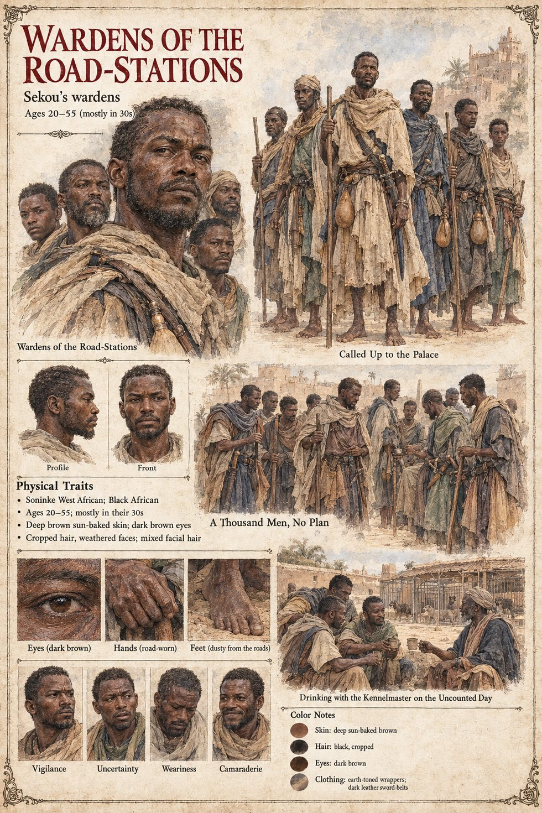

Wardens of the Road-Stations
Sekou's wardens · keepers of the wells and caravan shelters on Danjeri's four roads · about a thousand called up · 20 to 55 on their sheet
The office is the unglamorous one that sees to the wells and caravan shelters on Danjeri's four roads, which the palace has given to Binta's son Sekou on the principle that no one has ever been assassinated for a well; the wardens are the men who work under it. In the three weeks after the Weighing they drift into Kambaso along the four roads, a thousand men called up by their Warden to keep order at the Second Asking, quartered by the hundred in the beer-houses of the lower town at nobody's expense. When Captain Wuro arrests the kennelmaster and takes the dog on a rope, they come up to the palace in the course of a single morning with staves and sword-belts and no plan, and are joined at the gate by the gold-weighers' guild and by a great many ordinary citizens who have eaten Grey-Never bread for forty years and do not intend to watch it be arrested. When a boy on the wall throws a spear, they are the men on the other side of the gate. By the second night of the war Sekou's wardens held the palace; they find the kennelmaster in the cellar of the guardhouse with a split lip and the dog asleep across his feet.
The manuscript uses the word for two bodies of men. The wardens on the kennel wall drink Hawa's Uncounted Day keg with Kolo at dusk, are asleep at their posts when Sira comes over the back wall, and find him at midday with the dead dog across his knees; six of them die when a party of Awa's riders tries the wall in the autumn. It does not say whether they are the same men as the thousand called up from the roads, though the war leaves the palace and its wall in their hands.
The manuscript gives their number, their arms and their office; no ages, faces or colouring. The sheet's ages of 20 to 55, mostly in their thirties, deep brown sun-baked skin, dark brown eyes, cropped hair, weathered faces, mixed facial hair, earth-toned wrappers and dark leather sword-belts are its own. Its scenes, Called Up to the Palace, A Thousand Men, No Plan and Drinking with the Kennelmaster on the Uncounted Day, treat the two bodies as one, as do its panels Vigilance, Uncertainty, Weariness and Camaraderie.
“with staves and sword-belts and no plan”